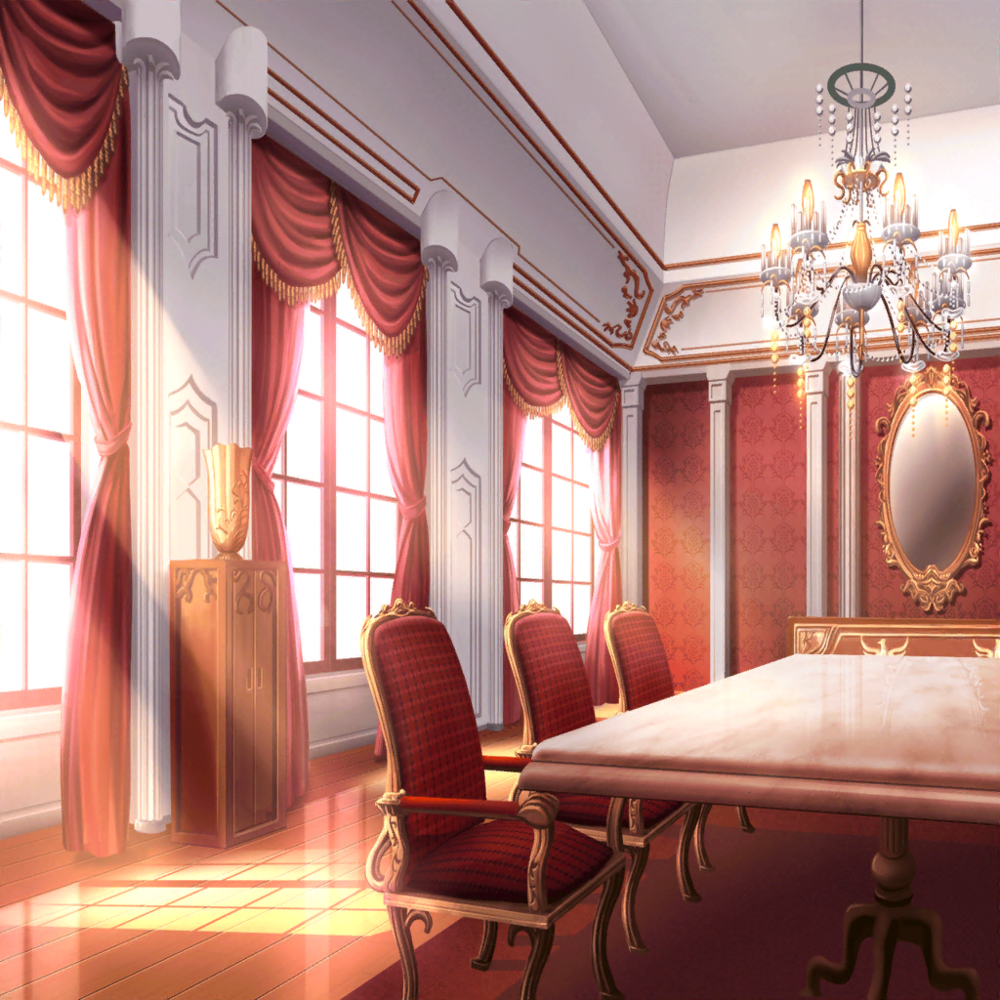

弦巻家 応接室
こころ
まず、今まであたしが考えてきた
楽しいことリストを紹介するわね！
これで『バンド』をやろうと思うの！
はぐみ
なになに？ 海の砂浜でお城を作る……シロツメクサで
かんむりをつくる……流れ星を探しに山にのぼる……
……うん、これ……
薫
洗い立てのシーツの匂いを嗅ぐ……お腹いっぱい
お菓子を食べる……ふふ……これは……
はぐみ・薫
すごくいい！！！！
花音・美咲
（……『バンド』全然関係ない……！！）
こころ
えへへ、そうでしょう？
これで毎日、みんなで楽しく暮らすのよっ
花音
こ、こころちゃん……！ どれもすごく楽しそうだけど、
楽器を弾いて、歌を歌って、曲を演奏しないと
音楽をしていることにはならないよ……？
こころ
そうなの？
どうしても音楽をしなきゃいけないの？
はぐみ
あっ、そうだった。バンドって音楽するんだよ！
おんがく……『おと』……『たのしい』？
う～ん？ なんかわかんなくなってきちゃった
花音
ど、どうしてもっていうか、だって……！
……えっと、だから……
…………うぅ
美咲
（うわ……この子、この調子でずっと
この3人に振り回されてきたのかな……
気弱そうだもんなぁ……）
美咲
あの。昨日駅前で、
弦巻こころとドラム叩いてましたよね？
なんでこんなことになってるんですか？
花音
それが……よく……わからないんです。
……私、ドラムを楽器屋さんに売りに行くはずが、
こころちゃんにバンドのメンバーだって言われて……
美咲
え。それじゃあ、ドラム辞めようとしてたのに、
無理やりバンドに入れられたってことですよね。
それって……いいんですか？
花音
い、いいのか、悪いのか……
でも……私、元々、こんな自分を変えたくて、
ドラムをやったけど……挫折してしまって……
花音
そしたらこころちゃんが、
勇気ならあたしがあげるって……
私が必要って……バンドの救世主って言われて……
美咲
あの……すみません。
なんか、いい話風に話されてますけど、それ端的に言うと
拉致されて無理やりバンドに加入させられてます
花音
や、やっぱり……そうなっちゃうんでしょうか……！
美咲
（とにかく、あたしはこのバンドから抜ける。
できればこの子も助ける。
一人じゃ絶対無理でしょこれ）
こころ
～～はっ！！ それよ！！ それだわ！！
バンドで、音を楽しむのよ！！
はぐみあなた、天才ねっ！
はぐみ
えっ、本当？
はぐみバンドの才能あるかな？
やったーーー！
薫
なるほど……では、みんなで
めくるめく音を楽しむ旅に出るとしよう……
こころ
う～んっ！！ 薫も最高！！
それじゃあせーので、みんなで音楽をするわよ！
せーーーのっ、はいっ！！！！
全員
…………
こころ
……って、何をすればいいのかしら？
美咲
いや楽器もってないじゃん！？
まずふつうそこからじゃ……
こころ
だって！ あたしは
とにかくバンドで楽しいことがしたいのよっ。
楽しいことをしなきゃ始まらないじゃないっ
美咲
じゃあその楽しいことを、
考えればいいんじゃないですか？
こころ
それが毎日、いつでも考えているから、
すぐには出てこないこともあるのよ。
楽しいことって、結構たいへんなんだから
美咲
はぁ……
よくわかんないけど、結構たいへんなのに
なんでそんなに考えてるの……？
美咲
（もっと女子高生が
考えるべきことってあると思うんですけど。
進路とか……ってこの豪邸だし、必要ないのかな）
こころ
そんなの決まってるじゃない！
『世界を笑顔にしたい』からよ！！
そう……あたし世界中を笑顔にしたいの、このバンドで！！
薫・はぐみ
世界を……
美咲・花音
笑顔に……？
こころ
そうよ。あたしは何より、人の笑顔が大っっ好きなの！
だから世界を笑顔でいーっぱいにして、溢れさせるの！
美咲
いや。そんなことできるわけないでしょ。
世界には戦争とか貧困とか……
この日本だってですね……
こころ
なんでできないって思うの？
むしろ、なんでできないの？
笑顔になりたくない人がこの世界のどこにいるの？
こころ
みんな毎日笑って楽しいのが最高でしょ。
楽しくなりたくない人なんている筈ないでしょ？
こころ
だからこのバンドで世界中を回って
笑顔でいーーっぱいにするわ！！
美咲
……は、はあ
美咲
（ほ、本気で……
本気で、世界を笑顔に出来ると思ってるんだ。
……バカだ。完全無欠の純粋なバカだ……！）
薫
感動したよこころ……
人は……一つの役を演じ続けることなどないと思っていた。
でも、君たちの、いや世界の王子なら喜んで引き受けよう
はぐみ
すごい……
はぐみも……すっごくいいと思う
はぐみ
あのね、はぐみソフトボールとか、色々スポーツやってるから、
負けて泣いちゃう人をたくさん、見てきたの。
そうすると、はぐみも泣きたくなっちゃって……
はぐみ
だから、世界を笑顔に、賛成っ！！
音楽がんばる！ 根性だすよっ！！
花音
…………
美咲
花音さん……だっけ。あなたはどうするんですか
花音
あっ、か、花音でいいですっ、私に『さん』なんてっ。
わ、私……は……
こころ
う～んっ！
それじゃあ行くわよっ！
世界をーーーーっ！！
薫・はぐみ
笑顔にーーーーっ！！！！
花音・美咲
…………
花音
現実的じゃない……ですけど、でも、もし……
もし、本当にそんなことができたら、
……素敵だなって……思います
美咲
……って、はっ！！
あたし、バンドに入るの断りに来たのに、
なにこの空気に飲まれてるんだ！？
花音
えっ。そ、そうだったんですか……？
私たちと一緒に、
バンドをやって貰えないんですか？
美咲
うっ
花音
え……？
美咲
（なんかそれ、この子に言われると、
見捨てていくみたいで、すっごい断りづらい……）
こころ
ほら！ そこの二人も！！
世界をーーーーっ！！
花音・美咲
え、笑顔……に？
こころ
う～んっ！！ その調子よ！！
それじゃあ『キグルミの人』も
ミッシェル代理として、今日からよろしくね！！
美咲
……えっ？
美咲
（しまった、いつの間にか正式メンバーになってる……っ！？）